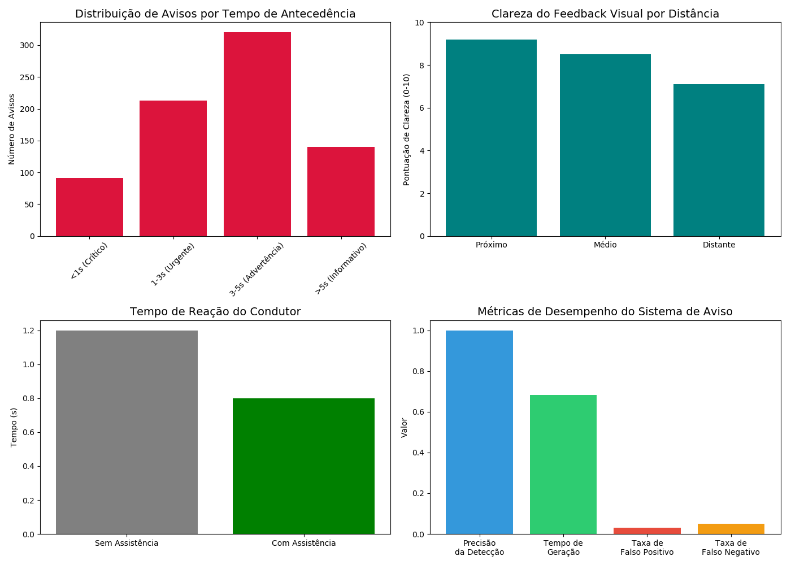

Visualizações de Desempenho
Métricas de Desempenho

Distribuição de Tempos de Detecção

Análise de Placas de Trânsito
Dashboard de Placas de Trânsito

Eficácia do Feedback ao Condutor
Comportamento do Veículo Autônomo
Resposta do Veículo a Sinalizações

Comparação com Desempenho Humano